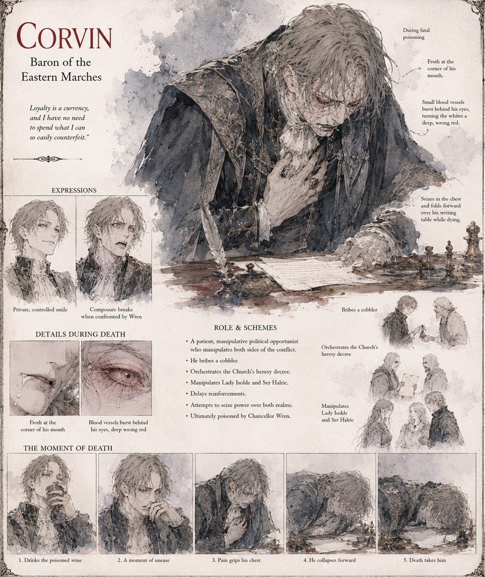

Corvin
Baron of the Eastern Marches
Baron of the Eastern Marches, patient and outwardly neutral while working every side of the war he helps prolong. He bribes a cobbler, orchestrates the Church's heresy decree against the heels, and leans on Isolde and Ser Halric for intelligence and delay in equal measure — stalling the relief force that might have ended the siege early. By the time Chancellor Wren quietly proves what he's been doing, Corvin is within reach of both crowns at once. He doesn't survive Wren noticing.
“Loyalty is a currency, and I have no need to spend what I can so easily counterfeit.”
Appears in The Iron Stiletto War